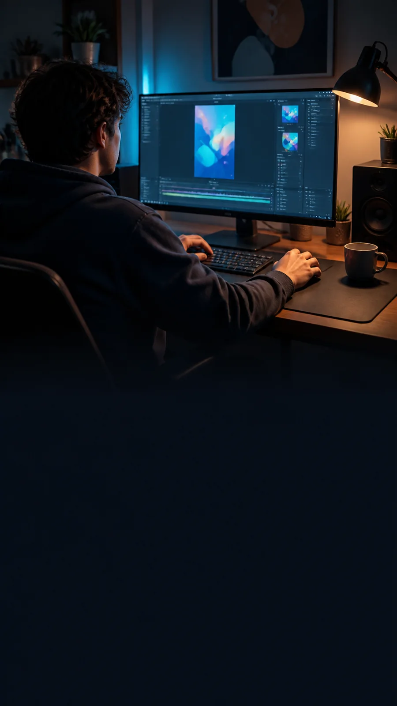
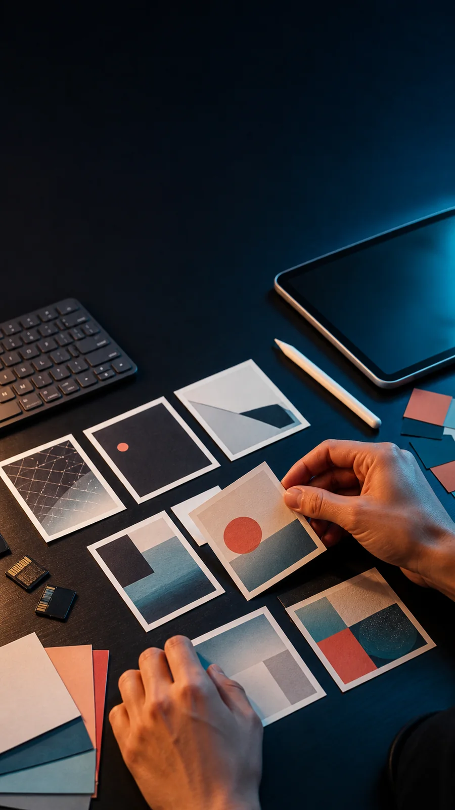

RENDERER2 / SAMPLE
12 SEC

AIが作った。その次は？
あと3%を
自分で直す。
テキストも、素材も、音も。
完成直前の「惜しい」を手元で仕上げる。
NO BACKENDBROWSER BASED
01 / MEDIA
素材は、
あとから選べる。

写真を差し替え
クロップまで調整
DRAG画像・動画を挿入
REFRAME見せたい場所へ調整
02 / LAST MILE
直せる場所は、
全部ここ。
01文字を直す✓
02素材を替える✓
03音を合わせる✓
自分で直せない部分だけ、コメントと参考画像を添えてAIへ戻せます。
03 / EXPORT
AI生成から
本番仕様へ。
完成までの最後の1マイルを、
非エンジニアの手に。
HTMLSHARE
PNGFRAME
MP4VIDEO
Generated sample imagery · no brands or real identities